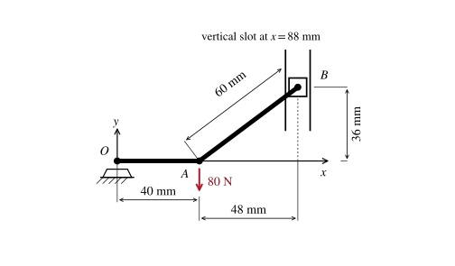
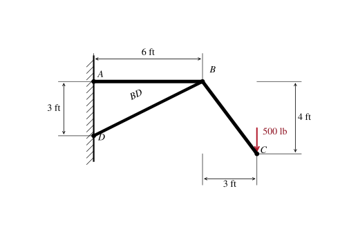
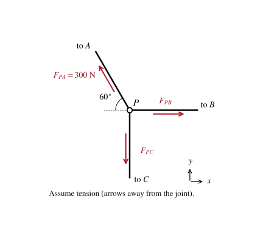

MECH 223-002 · Fall 2026 · Week 13
Muddiest Point 23 study guide
Monday, Nov 16. Chapter 6: frames and machines.
This page follows Monday’s Muddiest Point (11 responses). Seven of you said the lecture was clear. Four questions grouped into the themes below. The vocabulary matches class: a truss is pin-connected and every member is a two-force member; a frame is pin-connected but has at least one multi-force member; a machine is a set of rigid parts that move relative to each other and transmit or modify forces.
Snapshot
| Theme | \(n\) | Section |
|---|---|---|
| Machines — what to isolate and how pieces connect | 1 | 1 |
| Frame analysis — \(\sum M\) with \(\sum F\) on a multi-force member | 1 | 2 |
| Choosing the moment center | 1 | 2 |
| Joint equilibrium — known member to unknown neighbor | 1 | 3 |
| Clear / no muddy point | 7 | — |
What you told us Monday (summarized)
Summarized, not quoted, because this page is on the open web.
- Seven of you said nothing was confusing, or that Monday was clear.
- One of you said the machines segment at the end of class was hard to connect to the earlier material.
- One of you asked how to combine moment and force sums when analyzing a frame member.
- One of you asked where to take \(\sum M\) when several unknowns appear at once.
- One of you asked whether a known tension in one member can be used to get the force in a neighbor at a joint.
1. Machines — one rigid piece at a time
A machine changes how forces pass through a tool: a small input at the handle can become a large grip at the jaw. The analysis does not start with one diagram for the whole device.
Break the device into separate rigid pieces at pins and contacts. Draw one free-body diagram per piece. Label every interaction: pins generally exert equal-and-opposite pairs on the two pieces (Newton’s third law). Find two-force members first; each one carries a single axial force along the line joining its two pins. Then solve the piece with the fewest unknowns and pass known pin forces to the next piece.
Machine workflow
- Identify rigid bodies (handle, links, jaw, slider, …).
- Mark two-force links; their forces act along the member line.
- Pick the piece with the smallest unknown count (often the input link).
- On each piece: \(\sum F_x = 0\), \(\sum F_y = 0\), \(\sum M = 0\).
- At shared pins, copy the interaction force onto the neighbor with opposite direction.
Worked example: crank and slider
Sizes are in millimeters and forces in newtons. Pin \(O\) is fixed to the frame. Crank \(OA\) is 40 mm along \(+x\). Connecting rod \(AB\) is 60 mm and joins \(A\) to pin \(B\). At \(B\) a slider runs in a vertical guide at \(x = 88\) mm. You push down on the crank at \(A\) with 80 N. Find the rod force and the vertical output at the slider.

From \(O\) to \(A\) is 40 mm; from \(A\) to \(B\) is 48 mm right and 36 mm up, so \(AB\) is a 3-4-5 triangle. The rod is a two-force member: one unknown \(F_{AB}\) along \(AB\). The crank is multi-force: reactions \(O_x\), \(O_y\) at the fixed pin and the rod force at \(A\).
Crank \(OA\). Assume the rod is in tension, so it pulls on the crank at \(A\) toward \(B\). With unit vector \((0.8,\,0.6)\) along \(A \to B\), that pull is \((0.8 F_{AB},\,0.6 F_{AB})\). Take counterclockwise moments positive about \(O\). The 80 N load at \(A\) turns the crank clockwise.
Slider at \(B\). The rod pushes on the slider with the opposite of the force it exerts on the crank at \(A\): \((-106.7,\,-80.0)\) N. The guide can only supply a horizontal reaction \(N\). Vertical equilibrium gives the output force \(Q\) (up on the slider).
For this geometry the output equals the input magnitude; a different crank angle or rod length would change that ratio. The pattern does not: split the machine, use two-force members where you can, and let pin forces chain from one piece to the next.
Self-check: Keep the same geometry but push with 120 N at \(A\). What are \(F_{AB}\), \(O_x\), and \(Q\)?
Answer
\(\sum M_O = -(40)(120) + 24 F_{AB} = 0\) gives \(F_{AB} = 200\) N (tension). Then \(O_x = -160\) N, \(O_y = 0\), and \(Q = 120\) N.
2. Frames — \(\sum M\), \(\sum F\), and where to take the moment
On a multi-force member of a frame, \(\sum F_x\), \(\sum F_y\), and \(\sum M\) are three tools on the same free-body diagram, not three different topics. You still get only three independent equations per isolated body.
Pick a moment center where as many unknown forces as possible pass through their lines of action—often a pin shared by several members. \(\sum M = 0\) about that pin can eliminate two unknowns at once. Use \(\sum F_x\) and \(\sum F_y\) for what is left. Two-force members in the frame still carry collinear forces at their ends; label them with one unknown along the member line.
Worked example: bent frame member with a strut
Lengths are in feet and forces in pounds. Joint \(A\) is a pin on a vertical wall. Member \(ABC\) is bent: \(AB\) is 6 ft horizontal to \(B\), then \(BC\) runs 3 ft to the right and 4 ft down to \(C\) (length 5 ft). A 500-lb downward load acts at \(C\). Strut \(BD\) is pin-connected at \(B\) and at wall point \(D\), which is 3 ft below \(A\) on the same wall. Neglect member weights.

\(BD\) is a two-force member. Its line runs from \(D(0,-3)\) to \(B(6,0)\): length \(3\sqrt{5}\) ft, with direction from \(D\) toward \(B\) as \((2/\sqrt{5},\,1/\sqrt{5})\). The bent beam \(ABC\) is multi-force: pin reactions \(A_x\), \(A_y\) at \(A\), strut force at \(B\), and the 500-lb load at \(C\). Because \(C\) is offset to the right of the vertical through \(B\), the load has a nonzero moment about \(B\).
Step 1 — \(\sum M\) about pin \(B\). The strut force at \(B\) acts through \(B\), so it drops out. The 500-lb load at \(C\) is 3 ft horizontally from the vertical through \(B\), so its moment arm about \(B\) is 3 ft. Reaction \(A_y\) at \(A\) has moment arm 6 ft about \(B\). Take counterclockwise positive:
A negative \(A_y\) means the wall pulls down on the beam (reaction opposite to a conventional upward arrow). That is consistent with the load tending to rotate the frame clockwise about \(B\).
Step 2 — \(\sum M\) about \(A\). Both \(A_x\) and \(A_y\) pass through \(A\). The load’s line of action is 9 ft to the right of the wall. For strut force \(F_{BD}\) (compression: the strut pushes on the beam away from \(D\), up and to the right toward \(B\)), the line of action is 6 ft horizontally from \(A\), contributing \(\sum M_A\) coefficient \(6/\sqrt{5}\) ft per pound of \(F_{BD}\).
Step 3 — \(\sum F_x\) and \(\sum F_y\) on \(ABC\). With \(F_{BD}\) in compression, the interaction on the beam at \(B\) resolves to \(2F_{BD}/\sqrt{5}\) to the right and \(F_{BD}/\sqrt{5}\) upward along the strut line.
Notice the order: moment about the pin with the most unknowns passing through it first, then a second moment or the force sums. On a frame, bending of the physical bar is not modeled here; you are finding pin and axial forces from rigid-body equilibrium.
Self-check: If the load at \(C\) is 300 lb instead of 500 lb, find \(A_y\) first from \(\sum M_B\).
Answer
\(-6A_y - (300)(3) = 0\) gives \(A_y = -150\) lb (150 lb downward).
3. Joint equilibrium — from one known member to its neighbors
Once the force in one member meeting at a pin is known, you can find neighbors at that pin using \(\sum F_x = 0\) and \(\sum F_y = 0\) at the joint. Resolve the known force into components (sine and cosine of the member angle are fine). Draw the other unknowns as tension along their member lines. There is no separate shortcut that skips equilibrium: each unknown still needs its equation from a joint or from an isolated member.
Worked example: three members at a pin
Forces are in newtons. Pin \(P\) joins three straight members. Member \(PA\) runs 60° above the horizontal to the left of \(P\). Member \(PB\) is horizontal to the right. Member \(PC\) is vertical downward. You are told \(F_{PA} = 300\) N in tension (drawn pulling away from \(P\) along \(PA\)).

Unit vector along \(PA\) (from \(P\) toward \(A\), up-left): \((-\tfrac{1}{2},\, \tfrac{\sqrt{3}}{2})\). The tension arrow on the joint is
Let \(F_{PB}\) and \(F_{PC}\) be unknown magnitudes drawn in tension along \(+x\) and \(-y\).
All three answers came out positive, so the tension assumption was consistent. A negative result would mean compression for that member.
Pin versus member. At a pin, every attached member exerts a force on the joint. Multi-force frame members can have several forces on one body, but at the pin itself you are still writing joint equilibrium in \(x\) and \(y\). Two-force members only contribute forces along their axes.
Self-check: Same joint, but \(F_{PA} = 300\) N is known to be compression (arrow into the joint along \(PA\)). What changes?
Answer
Flip the sign on the \(PA\) components: use \((+150,\,-259.8)\) N. Then \(F_{PB} = -150\) N (150 N compression) and \(F_{PC} = -259.8\) N (compression on \(PC\)).
Definitions worth keeping straight
- Two-force member. Loads only at the two end pins; the forces are equal, opposite, and along the line joining the pins.
- Truss. Every member is a two-force member.
- Frame. At least one multi-force member; pins on multi-force members generally have two unknown force components.
- Machine. Parts move relative to each other; analyze each rigid piece separately and match pin forces at connections.
Page built Nov 17, 2026. Questions? Office hours or Canvas.